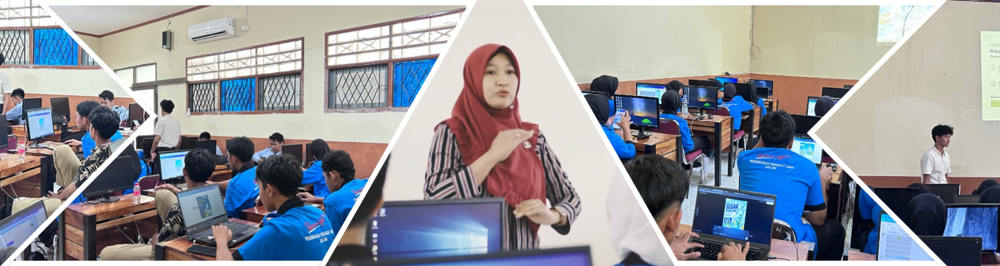
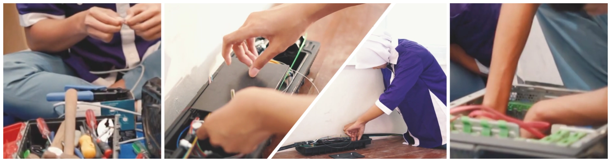
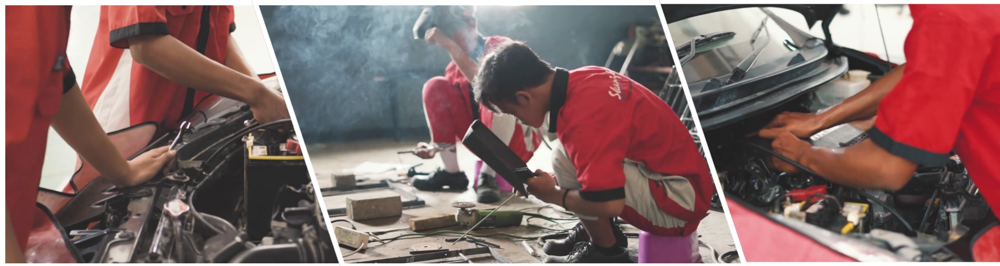
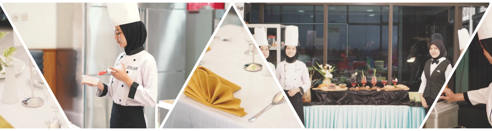

Profil Singkat
SMK Negeri 4 Kendal berkomitmen tinggi untuk menghasilkan lulusan yang kompeten, berkarakter unggul, serta berdaya saing global di era modern. Dengan memadukan pendidikan akademik yang kokoh dan pelatihan kejuruan yang intensif, kami senantiasa menyelaraskan kurikulum dengan perkembangan teknologi serta kebutuhan nyata dunia kerja.
Sebagai lembaga pendidikan yang diakui sebagai Sekolah Pusat Keunggulan (Center of Excellence), SMK Negeri 4 Kendal terus memperluas jejaring kerja sama dengan Dunia Usaha dan Dunia Industri (DUDI) guna menjamin keterserapan lulusan secara optimal dan berkelanjutan.
Didukung oleh lingkungan belajar kondusif yang berdiri di atas lahan seluas 30.280 m² serta sarana prasarana yang mutakhir, kami siap mendidik taruna-taruni menjadi generasi penerus bangsa yang andal, inovatif, dan berakhlak mulia.
Program Keahlian
SMK Negeri 4 Kendal menyelenggarakan 6 Program Keahlian unggulan yang dirancang untuk membekali siswa dengan kompetensi masa depan.
Fasilitas Unggulan

Laboratorium Komputer (RPL/PPLG)
Laboratorium komputer modern dengan spesifikasi komputer tinggi untuk mendukung pembelajaran pemrograman, web, mobile, dan gim.

Laboratorium Komputer & Jaringan (TKJ)
Fasilitas laboratorium lengkap untuk simulasi jaringan, perancangan infrastruktur server, administrasi sistem, dan keamanan jaringan.

Bengkel Otomotif (TKRO)
Bengkel dengan peralatan berstandar industri otomotif nasional untuk melatih keterampilan praktik siswa dalam hal mesin dan kelistrikan kendaraan ringan.

Teaching Factory (Kuliner)
Dapur praktik profesional berstandar industri perhotelan dan restoran untuk melatih manajemen produksi makanan, pelayanan komersial, dan kewirausahaan kuliner.